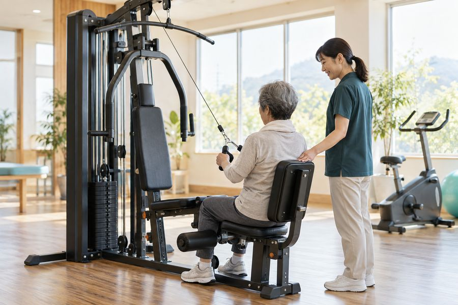
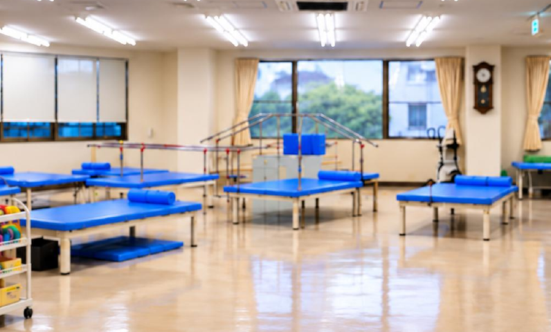
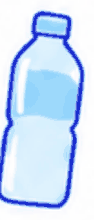
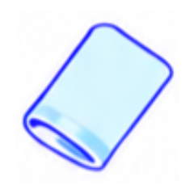

定員 各回 定員8名からスタート
ご利用ニーズに応じて受入枠を順次拡大予定
※午後の回は、受入体制を整え、順次開設を予定しています。
各回 定員8名からスタート。空いている曜日を押すと、お問い合わせ欄にご希望が入ります。
介護度が高くても、移動が自立していればご相談ください。車椅子で送迎し、到着後に室内をご自身で移動できる方はご利用いただけます。移動に介助が必要な方は、これまでどおり通常の通所リハビリテーションをご案内します。

理学療法士・作業療法士が、どこに問題があるのかを見極めて、そこに対して治療する。ここがいちばんの特徴です。
食事・入浴はありません。リハビリテーションに特化した短時間型のデイケア・リハビリテーションです。
専門職がお身体の状態に合わせて、運動内容や負荷をご提案します。

自主トレーニング用の運動機器
準備中・順次導入予定
個別リハビリに加えて、自主トレーニングの環境を整えています。
導入予定の運動機器の例
※導入する機器の種類・時期は調整中です。一部の運動機器は、開設時にはご利用いただけない場合があります。
阪本病院を中心におおむね半径4km
車椅子での送迎にも対応します。
圏外にお住まいの方も、まずはご相談ください。
※ 送迎のルートや道路状況により、対応できない場合があります。

お飲み物
汗拭くタオル水分の提供は行っておりません。動きやすい服装・靴でお越しください。
ご不明な点、ご利用のご相談は、お電話でお問い合わせください。
「デイケアについて」とお申し付けください。担当スタッフが対応いたします。